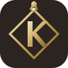

الشكل ١ — Royal Diamond
قوي · ملكي

لمسة ملكية — ماسة و K عريض
إطار ماسي ذهبي بأحجار في الزوايا، حرف K ممتلئ بالدهب، وتاج فوق الشعار. شكل جريء يقول "فخامة ودهب" من أول نظرة. مناسب لو عايزة الماركة تبان premium وقوية.